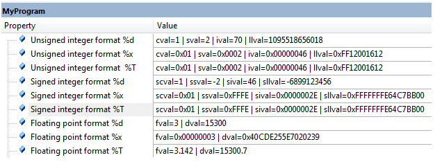
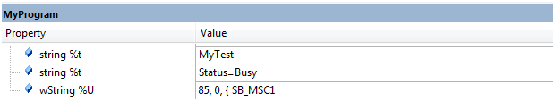
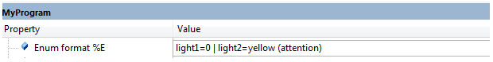
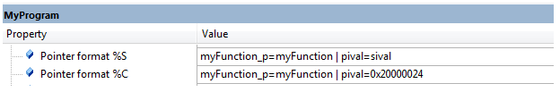
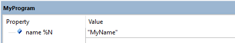
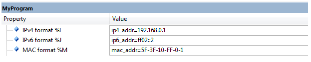
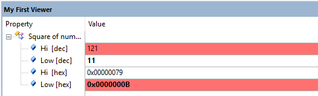
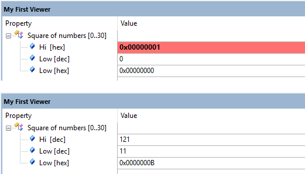

The elements event and item use the attributes property and value to output information in the Component Viewer or Event Recorder. The string data of these attributes may contain format specifiers to output values, strings, or symbolic information.
Format Specifiers
A format specifier starts with a percent sign followed by a format selector followed by an expression enclosed in brackets.
Examples:
<item property="State=%d[TCB.state]" value="delay=%x[time_ticks/10]" />
<item property="%S [TCB[i].Entry] : %d[i]"
value="ThreadId=%d[TCB[i].Task_ID] | State=%E[TCB[i].State] | Priority=%E[TCB[i].Priority] | Delay=%d[TCB[i].DelaySum]">
The following format specifiers are available:
- Note
-
Examples
The following examples show the usage of the various format specifiers.
%d, %x, %T format specifier
The following example shows how to output integer values using:
- %d for decimal number format.
- %x for hexadecimal number format.
- %T for number format that depends on the data type.
Example
C source file:
uint8_t cval = 1;
uint16_t sval = 0x2;
uint32_t ival = 0x46;
uint64_t llval = 0xFF12001612LL;
int8_t scval = 1;
int16_t ssval = -2;
int32_t sival = 46;
int64_t sllval = -6899123456;
float fval = 3.14156;
double dval = 15300.6711123;
SCVD file:
<?xml version="1.0" encoding="utf-8"?>
<component_viewer schemaVersion="0.1" xmlns:xs="http://www.w3.org/2001/XMLSchema-instance" xs:noNamespaceSchemaLocation="Component_Viewer.xsd">
<component name="MyExample" version="1.0.0"/>
<objects>
<object name="MyProgram">
<read name="c_value" type="uint8_t" symbol="cval" />
<read name="s_value" type="uint16_t" symbol="sval" />
<read name="i_value" type="uint32_t" symbol="ival" />
<read name="ll_value" type="uint64_t" symbol="llval" />
<read name="sc_value" type="int8_t" symbol="scval" />
<read name="ss_value" type="int16_t" symbol="ssval" />
<read name="si_value" type="int32_t" symbol="sival" />
<read name="sll_value" type="int64_t" symbol="sllval" />
<read name="f_value" type="float" symbol="fval" />
<read name="d_value" type="double" symbol="dval" />
<out name="MyProgram">
<item property="Unsigned integer format %%d"
value="cval=%d[c_value] | sval=%d[s_value] | ival=%d[i_value] | llval=%d[ll_value]" />
<item property="Unsigned integer format %%x"
value="cval=%x[c_value] | sval=%x[s_value] | ival=%x[i_value] | llval=%x[ll_value]" />
<item property="Unsigned integer format %%T"
value="cval=%T[c_value] | sval=%T[s_value] | ival=%T[i_value] | llval=%T[ll_value] " />
<item property="Signed integer format %%d"
value="scval=%d[sc_value] | ssval=%d[ss_value] | sival=%d[si_value] | sllval=%d[sll_value]" />
<item property="Signed integer format %%x"
value="scval=%x[sc_value] | ssval=%x[ss_value] | sival=%x[si_value] | sllval=%x[sll_value]" />
<item property="Signed integer format %%T"
value="scval=%T[sc_value] | ssval=%T[ss_value] | sival=%T[si_value] | sllval=%T[sll_value] " />
<item property="Floating point format %%d"
value="fval=%d[f_value] | dval=%d[d_value]" />
<item property="Floating point format %%x"
value="fval=%x[f_value] | dval=%x[d_value]" />
<item property="Floating point format %%T"
value="fval=%T[f_value] | dval=%T[d_value]" />
</out>
<object>
</objects>
</component_viewer>
Output:

Output of %d, %x, %T format specifiers
%t, %U format specifiers
The following example shows how to output ASCII text, including an USB string:
C source file
volatile char string[10] = "MyTest";
unsigned short wString[15] = L"USB_MSC1";
*.SCVD file
<?xml version="1.0" encoding="utf-8"?>
<component_viewer schemaVersion="0.1" xmlns:xs="http://www.w3.org/2001/XMLSchema-instance" xs:noNamespaceSchemaLocation="Component_Viewer.xsd">
<component name="MyExample" version="1.0.0"/>
<objects>
<object name="MyProgram">
<read name="string_val" type="int8_t" symbol="string" size="10" />
<read name="wstring_val" type="int16_t" symbol="wString" size="15" />
<out name="MyProgram">
<item property="string %%t" value="%t[string_val]" />
<item property="string %%t" value="Status=%t[i_value==0 ? "Free" : "Busy"]" />
<item property="wString %%U" value="%U[wstring_val]" />
</out>
</object>
</objects>
</component_viewer>
Output

Output of %t, %U format specifiers
%E format specifier
The following example shows how to output integer values as symbolic enumerator value.
C source file
enum color { red=1, yellow=2, green=3, };
enum color light1;
enum color light2 = yellow;
*.SCVD File
<?xml version="1.0" encoding="utf-8"?>
<component_viewer schemaVersion="0.1" xmlns:xs="http://www.w3.org/2001/XMLSchema-instance" xs:noNamespaceSchemaLocation="Component_Viewer.xsd">
<component name="MyExample" version="1.0.0"/> <!-- name and version of the component -->
<!-- \%E Format Specifier -->
<typedefs>
<typedef name="Color" size="4" info="enum color">
<member name="val" type="uint32_t" offset="0">
<enum name="red (alert)" value="1" info="alert color" />
<enum name="yellow (attention)" value="2" info="attention color" />
<enum name="green (working)" value="3" info="working color" />
</member>
</typedef>
</typedefs>
<objects>
<object name="MyProgram">
<!-- \%E Format Specifier -->
<read name="light1" type="Color" symbol="light1" />
<read name="light2" type="Color" symbol="light2" />
<out name="MyProgram">
<!-- \%E Format Specifier -->
<item property="Enum format %%E" value="light1=%E[light1.val] | light2=%E[light2.val]" />
</out>
</object>
</objects>
</component_viewer>
Output

Output of %E format specifiers
%C, %S format specifier
The following example show how to output an address value as symbol that is part of the user application using:
- %C as symbolic name with file context.
- %S as symbolic name.
C source file
static void myFunction (void) {
;
}
typedef void (*function_t) (void);
function_t myFunction_p = myFunction;
int32_t * pival=&sival;
*.SCVD file
<?xml version="1.0" encoding="utf-8"?>
<component_viewer schemaVersion="0.1" xmlns:xs="http://www.w3.org/2001/XMLSchema-instance" xs:noNamespaceSchemaLocation="Component_Viewer.xsd">
<component name="MyExample" version="1.0.0"/> <!-- name and version of the component -->
<objects>
<object name="MyProgram">
<!-- \%C, \%S Format Specifier -->
<read name="p_func" type="uint32_t" symbol="myFunction_p" />
<read name="p_ival" type="uint32_t" symbol="pival" />
<out name="MyProgram">
<!-- \%C, \%S Format Specifier -->
<item property="Pointer format %%S" value="myFunction_p=%S[p_func] | pival=%S[p_ival]" />
<item property="Pointer format %%C" value="myFunction_p=%C[p_func] | pival=%C[p_ival]" />
</out>
</object>
</objects>
</component_viewer>
Output

Output of %C, %S format specifiers
%N format specifier
The following example show how to output an name string from the target application using the %N format specifier.
C source file
volatile char *name = "MyName";
*.SCVD file
<?xml version="1.0" encoding="utf-8"?>
<component_viewer schemaVersion="0.1" xmlns:xs="http://www.w3.org/2001/XMLSchema-instance" xs:noNamespaceSchemaLocation="Component_Viewer.xsd">
<component name="MyExample" version="1.0.0"/> <!-- name and version of the component -->
<objects>
<object name="MyProgram">
<read name="name_val" type="uint32_t" symbol="name" />
<out name="MyProgram">
<item property="name %%N" value="%N[name_val]" />
</out>
</object>
</objects>
</component_viewer>
Output

Output of %N format specifier
%I, %J, %M format specifier
The following example show how to output MAC and IP addresses that are part of the user application using:
- %I for IPv4 address information, example: 192.168.150.99.
- %J for IPv6 address information, example: 2a00:ee0:d::13
- %M for MAC address information, example: 1E-30-6C-A2-45-5F
C source file
uint8_t ip4_addr[4] = {192, 168, 0, 1};
uint8_t ip6_addr[16] = {0xFF, 0x02, 0, 0, 0, 0, 0, 0, 0, 0, 0, 0, 0, 0, 0, 0x02 };
uint8_t mac_addr[6] = {0x5F, 0x3F, 0x10, 0xFF, 0x00, 0x01};
<*.SCVD file
<?xml version="1.0" encoding="utf-8"?>
<component_viewer schemaVersion="0.1" xmlns:xs="http://www.w3.org/2001/XMLSchema-instance" xs:noNamespaceSchemaLocation="Component_Viewer.xsd">
<component name="MyExample" version="1.0.0"/> <!-- name and version of the component -->
<objects>
<object name="MyProgram">
<!-- \%I, \%J, %M Format Specifier -->
<read name="IPv4val" type="uint8_t" symbol="ip4_addr" size="4" />
<read name="IPv6val" type="uint8_t" symbol="ip6_addr" size="16" />
<read name="MAC_val" type="uint8_t" symbol="mac_addr" size="6" />
<out name="MyProgram">
<!-- \%I, \%J, %M Format Specifier -->
<item property="IPv4 format %%I" value="ip4_addr=%I[IPv4val]" />
<item property="IPv6 format %%J" value="ip6_addr=%J[IPv6val]" />
<item property="MAC format %%M" value="mac_addr=%M[MAC_val]" />
</out>
</object>
</objects>
</component_viewer>
Output

Output of %I, %J, %M format specifiers
%% format specifier
The following example show how to output a percentage sign.
C source file
volatile char string[10] = "MyTest";
unsigned short wString[15] = L"USB_MSC1";
*.SCVD file
<?xml version="1.0" encoding="utf-8"?>
<component_viewer schemaVersion="0.1" xmlns:xs="http://www.w3.org/2001/XMLSchema-instance" xs:noNamespaceSchemaLocation="Component_Viewer.xsd">
<component name="MyExample" version="1.0.0"/>
<objects>
<object name="MyProgram">
<read name="string_val" type="int8_t" symbol="string" size="10" />
<read name="wstring_val" type="int16_t" symbol="wString" size="15" />
<out name="MyProgram">
<item property="string %%t" value="%t[string_val]" />
<item property="string %%t" value="Status=%t[i_value==0 ? "Free" : "Busy"]" />
<item property="wString %%U" value="%U[wstring_val]" />
</out>
</object>
</objects>
</component_viewer>
Output
The example shows the %-sign output in the Property column.
Output of % format specifier
alert and bold output
The following example is based on the SCVD Simple Example and shows how to emphasis output with the bold and alert attribute of the <item> element.
*.SCVD file
<component_viewer schemaVersion="0.1" xmlns:xs="http://www.w3.org/2001/XMLSchema-instance" xs:noNamespaceSchemaLocation="Component_Viewer.xsd">
<component name="MyFirstComponent" version="0.0.1"/> <!-- name and version of the component -->
<typedefs>
<typedef name="MyGeneralType" info="This is MyType with 2 members" size="12">
<member name="hi" type="uint32_t" offset="0" info="member 'mysymbol.hi'"/>
<member name="low" type="uint32_t" offset="4" info="member 'mysymbol.low'"/>
</typedef>
</typedefs>
<objects>
<object name="MyFirstObject">
<read name="MyFirstSymbol" type="MyGeneralType" symbol="mysymbol" const="0"/>
<out name="My First Viewer"> <!-- Window name -->
<item property="Square of numbers [0..30]"> <!-- Property entry -->
<!-- These items extend the entry above -->
<item property="Hi [dec]" value="%d[MyFirstSymbol.hi]" info="Show decimal value of 'mysymbol.hi'" alert="MyFirstSymbol.hi > 100" />
<item property="Low [dec]" value="%d[MyFirstSymbol.low]" info="Show decimal value of 'mysymbol.low'" bold="MyFirstSymbol.low < 20"/>
<item property="Hi [hex]" value="%x[MyFirstSymbol.hi]" info="Show HEX value of 'mysymbol.hi'"/>
<item property="Low [hex]" value="%x[MyFirstSymbol.low]" info="Show HEX value of 'mysymbol.low'" bold="1" alert="1"/>
</item>
</out>
</object>
</objects>
</component_viewer>
Output
Depending on the values, the item:
- "Hi [dec]" is displayed in alert color red when the value is > 100
- "Low [dec]" is displayed in bold when the value is < 20
The value "Low [hex]" is shown in red and bold (both attributes are set).

Output using bold and alert attributes
Dynamic output formats
The following example is based on the SCVD Simple Example and shows how to dynamically change the output format of an <item> element using a <print> child element.
*.SCVD file
<component_viewer schemaVersion="0.1" xmlns:xs="http://www.w3.org/2001/XMLSchema-instance" xs:noNamespaceSchemaLocation="Component_Viewer.xsd">
<component name="MyFirstComponent" version="0.0.1"/> <!-- name and version of the component -->
<typedefs>
<typedef name="MyGeneralType" info="This is MyType with 2 members" size="12">
<member name="hi" type="uint32_t" offset="0" info="member 'mysymbol.hi'"/>
<member name="low" type="uint32_t" offset="4" info="member 'mysymbol.low'"/>
</typedef>
</typedefs>
<objects>
<object name="MyFirstObject">
<read name="MyFirstSymbol" type="MyGeneralType" symbol="mysymbol" const="0"/>
<out name="My First Viewer"> <!-- Window name -->
<item property="Square of numbers [0..30]"> <!-- Property entry -->
<!-- These items extend the entry above -->
<item>
<print cond="MyFirstSymbol.hi <= 100" property="Hi [hex]" value="%x[MyFirstSymbol.hi]" info="Show HEX value of 'mysymbol.hi' bold="1" alert="1" />
<print cond="MyFirstSymbol.hi > 100" property="Hi [dec]" value="%d[MyFirstSymbol.hi]" info="Show decimal value of 'mysymbol.hi'" />
</item>
<item property="Low [dec]" value="%d[MyFirstSymbol.low]" info="Show decimal value of 'mysymbol.low'" />
<item property="Low [hex]" value="%x[MyFirstSymbol.low]" info="Show HEX value of 'mysymbol.low'" />
</item>
</out>
</object>
</objects>
</component_viewer>
Output
Depending on the values, the item "Hi" is displayed as:
- "Hi [hex]" and hex formant with bold and alert color red when the value is <= 100
- "Hi [dec]" and decimal format when the value is > 100

Dynamic output format changes